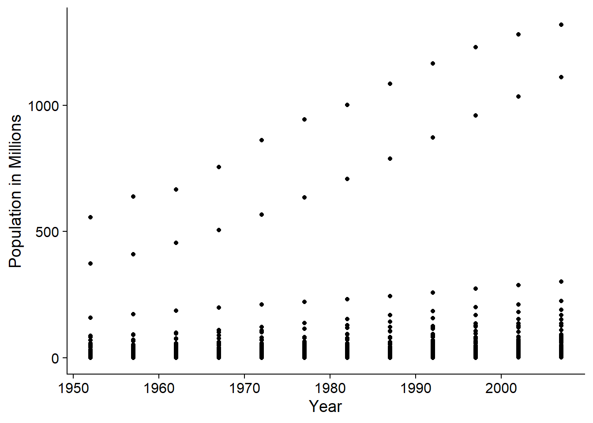
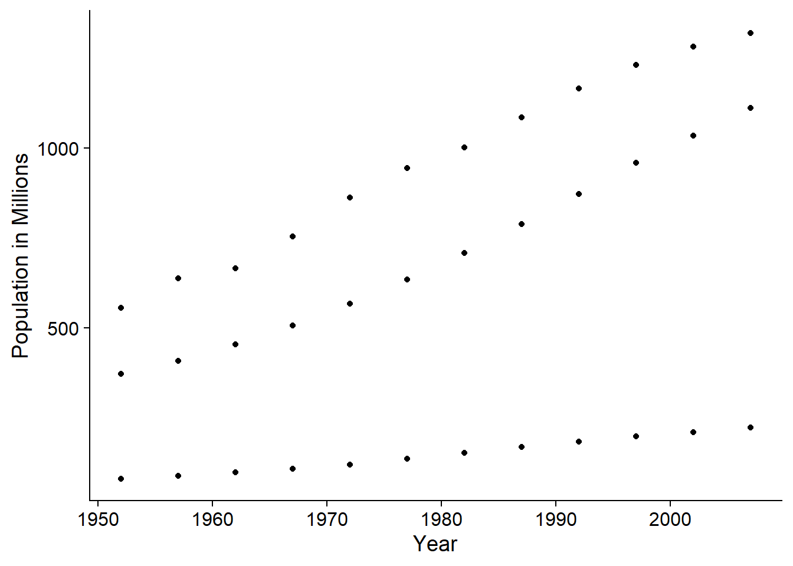

library(gapminder)Warning: package 'gapminder' was built under R version 4.3.3data(gapminder)
library(ggplot2)
library(cowplot)Warning: package 'cowplot' was built under R version 4.3.3theme_set(theme_cowplot())
library(magrittr)The exercises in this document follow along closely with Lesson 9 of R for Reproducible Scientific Analysis, provided by the Software Carpentry community under the creative commons license, CC-BY 4.0. For more information see The Carpentries.
library(gapminder)Warning: package 'gapminder' was built under R version 4.3.3data(gapminder)
library(ggplot2)
library(cowplot)Warning: package 'cowplot' was built under R version 4.3.3theme_set(theme_cowplot())
library(magrittr)Make a new column in the gapminder data frame that contains population in units of millions of people. Check the head or tail of the data frame to make sure it worked.
gapminder$pop_mill <- gapminder$pop / 1e6
head(gapminder$pop_mill)[1] 8.425333 9.240934 10.267083 11.537966 13.079460 14.880372
On a single graph, plot population, in millions, against year, for all countries. Do not worry about identifying which country is which.
ggplot(data = gapminder, aes(x = year, y= pop_mill)) +
geom_point()+
labs(x = "Year", y = "Population in Millions")
Repeat the exercise, graphing only for China, India, and Indonesia. Again, do not worry about which is which.
countries_of_interest <- c("China", "India", "Indonesia")
df_subset <- gapminder[gapminder$country %in% c("China", "India", "Indonesia"),]
ggplot(data = df_subset, aes(x = year, y= pop_mill)) +
geom_point()+
labs(x = "Year", y = "Population in Millions")

Given the following matrix:
m <- matrix(1:12, nrow=3, ncol=4)
m [,1] [,2] [,3] [,4]
[1,] 1 4 7 10
[2,] 2 5 8 11
[3,] 3 6 9 12Write down what you think will happen when you run:
m ^ -1m * c(1, 0, -1)m > c(0, 20)m * c(1, 0, -1, 2)Did you get the output you expected? If not and the video didn’t clear things up, let me know and we can discuss.
m ^ -1divides 1 by all the values in mm * c(1, 0, -1) will use the values in the vector to multiply row 1 by 1, row two by 0, and row 3 by -1m > c(0, 20)will use the values in the vector. The values in m will be compared one column at a time.m * c(1, 0, -1, 2)will use the values of the vector. Values in m will be compared one column at a time, so the first column will be multipled by c(1, 0, -1) and the first value of the second column will be multipled by 2. The following two values of column 2 will be multiplied by c(1, 0), and then the first two values of column 3 will be multiplied by c(-1, 2), etc.
We’re interested in looking at the sum of the following sequence of fractions:
x = 1/(1^2) + 1/(2^2) + 1/(3^2) + ... + 1/(n^2)This would be tedious to type out, and impossible for high values of \(n\). Use vectorization to compute \(x\) when \(n=100\).
n <- 100
sum(1/(1:n)^2)[1] 1.634984
What is the sum when \(n=10,000\)?
n <- 1e4
sum(1/(1:n)^2)[1] 1.644834